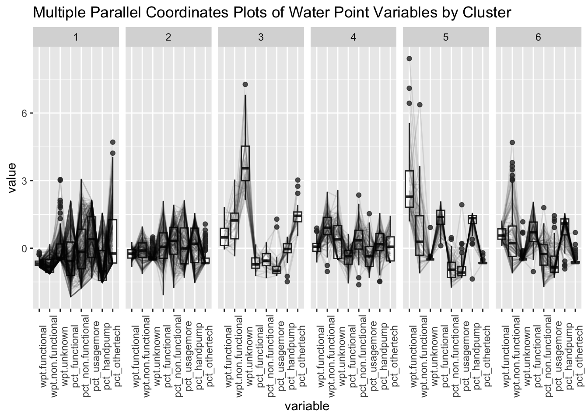

pacman::p_load(rgdal, spdep, tmap, sf, ClustGeo,
ggpubr, cluster, factoextra, NbClust,GGally,
heatmaply, corrplot, psych, tidyverse,funModeling)Take Home 2
Task
The process of creating regions is called regionalisation. A regionalisation is a special kind of clustering where the objective is to group observations which are similar in their statistical attributes, but also in their spatial location. In this sense, regionalization embeds the same logic as standard clustering techniques, but also applies a series of geographical constraints. Often, these constraints relate to connectivity: two candidates can only be grouped together in the same region if there exists a path from one member to another member that never leaves the region. These paths often model the spatial relationships in the data, such as contiguity or proximity. However, connectivity does not always need to hold for all regions, and in certain contexts it makes sense to relax connectivity or to impose different types of geographic constraints.
In this exercise, we want to regionalise Nigeria by using, but not limited to the following measures:
Total number of functional water points
Total number of nonfunctional water points
Percentage of functional water points
Percentage of non-functional water points
Percentage of main water point technology (i.e. Hand Pump)
Percentage of usage capacity (i.e. < 1000, >=1000)
Percentage of rural water points
Importing Packages
Before we get started, it is important for us to install the necessary R packages into R and launch these R packages into R environment.
The R packages needed for this exercise are as follows:
Spatial data handling
- sf, rgdal and spdep
Attribute data handling
- tidyverse, especially readr, ggplot2 and dplyr
Choropleth mapping
- tmap
Multivariate data visualisation and analysis
- coorplot, ggpubr, GGally, and heatmaply
Cluster analysis
cluster
ClustGeo
The code chunks below installs and launches these R packages into R environment.
Importing Geospatial Data
Two datasets to be used:
Waterpoint data from WPdx Global Data Repositories: geo_export
Nigeria Level-2 Administrative Boundary (also known as Local Government Area) polygon features GIS data: nga_admbnda_adm2_osgof_20190417
Importing water point geospatial data
wp_nga <- st_read(dsn='data/geodata', layer='geo_export', crs = 4326) %>%
filter(clean_coun == 'Nigeria')The above code does the following:
st_read()of sf package is used to import geo_export shapefile into R environment and save the imported geospatial data into simple feature data table.filter()of dplyr package is used to extract water point records of Nigeria.
Importing Nigeria LGA boundary data
nga <- st_read(dsn='data/geoBoundaries', layer='nga_admbnda_adm2_osgof_20190417', crs = 4326)Data Wrangling
Re-coding NA values into string
In the code chunk below, replace_na() is used to recode all the NA values in status_cle field into Unknown.
wp_nga <- wp_nga %>% mutate(status_cle = replace_na(status_cle, 'Unknown'))We will also be replacing the duplicates in the local area (ADM2_EN column). The below code is referenced from Jordan’s EDA as done in the take home exercise 1.
nga <- (nga[order(nga$ADM2_EN), ])
duplicate_area <- nga$ADM2_EN[nga$ADM2_EN %in% nga$ADM2_EN[duplicated(nga$ADM2_EN)] ]
duplicate_areaThe duplicated areas are identified here and replaced in the below code.
nga$ADM2_EN[c(94,95,304,305,355,356,519,546,547,693,694)] <- c("Bassa (Kogi)","Bassa (Plateau)","Ifelodun (Kwara)","Ifelodun (Osun)","Irepodun (Kwara)","Irepodun (Osun)","Nassarawa","Obi (Benue)","Obi(Nasarawa)","Surulere (Lagos)","Surulere (Oyo)")
length((nga$ADM2_EN[nga$ADM2_EN %in% nga$ADM2_EN[duplicated(nga$ADM2_EN)] ]))EDA
In the code chunk below, freq() of funModeling package is used to display the distribution of various fields that we are interested in utilising for cluster analysis in wp_nga.
Through the below visualisations, we can decide if we should group any categories together in the field or remove outliers, if any.
freq(data = wp_nga, input='status_cle')freq(data = wp_nga, input='usage_cap')freq(data = wp_nga, input='X_water_tec')Other than mechanized pump and hand pump, the rest of the categories are in very small quantity, and they will be grouped together in the later part when extracting water point technology.f
freq(data = wp_nga, input='is_urban')summary(wp_nga)Extracting Water Point Data
In this section, we will extract the water point records by using classes in status_cle field using the filter() of dplyr and the same is applied in the subsequent code blocks for the different fields as well.
wpt_functional <- wp_nga %>%
filter(status_cle %in%
c('Functional',
'Functional but not in use',
'Functional but needs repair'
))
wpt_nonfunctional <- wp_nga %>%
filter(status_cle %in%
c("Abandoned/Decommissioned",
"Abandoned",
"Non-Functional",
"Non functional due to dry season",
"Non-Functional due to dry season"))
wpt_unknown <- wp_nga %>%
filter(status_cle == "Unknown")Extracting Usage Capacity Data
wpt_usagemore <- wp_nga %>%
filter(usage_cap == '1000')
wpt_usageless <- wp_nga %>%
filter(usage_cap != '1000')Extracting Water Point Technology Data
`%notin%` <- Negate(`%in%`)
wpt_handpump <- wp_nga %>%
filter(X_water_tec == 'Hand Pump')
wpt_mechanized <- wp_nga %>%
filter(X_water_tec == 'Mechanized Pump')
wpt_othertech <- wp_nga %>%
filter(X_water_tec %notin% c("Hand Pump",'Mechanized Pump'))Extracting Urban Level Data
wpt_urban <- wp_nga %>%
filter(is_urban == 'True')
wpt_rural <- wp_nga %>%
filter(is_urban == 'False')Performing Point-in-Polygon Count
nga_wp <- nga %>%
mutate(`total wpt` = lengths(st_intersects(nga, wp_nga))) %>%
mutate(`wpt functional` = lengths(st_intersects(nga, wpt_functional))) %>%
mutate(`wpt non-functional` = lengths(st_intersects(nga, wpt_nonfunctional))) %>%
mutate(`wpt unknown` = lengths(st_intersects(nga, wpt_unknown))) %>%
mutate(wpt_usagemore = lengths(st_intersects(nga, wpt_usagemore))) %>%
mutate(wpt_usageless = lengths(st_intersects(nga, wpt_usageless))) %>%
mutate(wpt_handpump = lengths(st_intersects(nga, wpt_handpump))) %>%
mutate(wpt_mechanized = lengths(st_intersects(nga, wpt_mechanized))) %>%
mutate(wpt_othertech = lengths(st_intersects(nga, wpt_othertech))) %>%
mutate(wpt_urban = lengths(st_intersects(nga, wpt_urban))) %>%
mutate(wpt_rural = lengths(st_intersects(nga, wpt_rural))) %>%
filter (`total wpt` != 0)nga_wp <- st_transform(nga_wp, crs = 26391)In this portion, we are joining the 2 datasets by intersection and getting the number of water points for each feature. Areas with no water points are also removed as we want to focus on existing water points and it is assumed that there is no need for water points in those areas that do not have an existing water point.
Saving the Analytical Data Table
nga_wp <- nga_wp %>%
mutate(pct_functional = `wpt functional`/`total wpt`) %>%
mutate(`pct_non-functional` = `wpt non-functional`/`total wpt`) %>%
mutate(`pct_usagemore` = `wpt_usagemore`/`total wpt`) %>%
mutate(`pct_usageless` = `wpt_usageless`/`total wpt`) %>%
mutate(`pct_handpump` = `wpt_handpump`/`total wpt`) %>%
mutate(`pct_mechanized` = `wpt_mechanized`/`total wpt`) %>%
mutate(`pct_othertech` = `wpt_othertech`/`total wpt`) %>%
mutate(`pct_urban` = `wpt_urban`/`total wpt`) %>%
mutate(`pct_rural` = `wpt_rural`/`total wpt`) %>%
select(3:4, 9:10, 18:37)nga_wp <- nga_wp %>% mutate_at(c('wpt functional','wpt non-functional','wpt unknown','pct_functional','pct_non-functional','pct_usagemore','pct_usageless','pct_handpump','pct_mechanized','pct_othertech','pct_urban','pct_rural'), ~replace_na(.,0))Things to learn from the code chunk above:
mutate()of dplyr package is used to derive the percentages of the featuresto keep the file size small,
select()of dplyr is used to retain certain fields onlyreplace_na()is used to replace all NA values to 0
We will save the sf data table into rds format which will be used in the remaining portions of analysis.
write_rds(nga_wp, "data/nga_wp.rds")Visualising using statistical graphs
tmap_mode("plot")tmap mode set to plottingnga_wp <- read_rds("data/nga_wp.rds")func <- ggplot(data=nga_wp,
aes(x= `wpt functional`)) +
geom_histogram(bins=20,
color="black",
fill="light blue")
nfunc <- ggplot(data=nga_wp,
aes(x= `wpt non-functional`)) +
geom_histogram(bins=20,
color="black",
fill="light blue")
unknown <- ggplot(data=nga_wp,
aes(x= `wpt unknown`)) +
geom_histogram(bins=20,
color="black",
fill="light blue")
pfunc <- ggplot(data=nga_wp,
aes(x= `pct_functional`)) +
geom_histogram(bins=20,
color="black",
fill="light blue")
pnfunc <- ggplot(data=nga_wp,
aes(x= `pct_non-functional`)) +
geom_histogram(bins=20,
color="black",
fill="light blue")
pusagemore <- ggplot(data=nga_wp,
aes(x= `pct_usagemore`)) +
geom_histogram(bins=20,
color="black",
fill="light blue")
pusageless <- ggplot(data=nga_wp,
aes(x= `pct_usageless`)) +
geom_histogram(bins=20,
color="black",
fill="light blue")
php <- ggplot(data=nga_wp,
aes(x= `pct_handpump`)) +
geom_histogram(bins=20,
color="black",
fill="light blue")
pmp <- ggplot(data=nga_wp,
aes(x= `pct_mechanized`)) +
geom_histogram(bins=20,
color="black",
fill="light blue")
pot <- ggplot(data=nga_wp,
aes(x= `pct_othertech`)) +
geom_histogram(bins=20,
color="black",
fill="light blue")
purban <- ggplot(data=nga_wp,
aes(x= `pct_urban`)) +
geom_histogram(bins=20,
color="black",
fill="light blue")
prural <- ggplot(data=nga_wp,
aes(x= `pct_rural`)) +
geom_histogram(bins=20,
color="black",
fill="light blue")
ggarrange(func, nfunc, unknown, pfunc, pnfunc, pusagemore, pusageless, php, pmp, pot, purban, prural,
ncol = 3,
nrow = 4)Here, we note that most of the variables do not exhibit normal distribution.
Correlation Analysis
Before we perform cluster analysis, it is important for us to ensure that the cluster variables are not highly correlated.
In this section, you will learn how to use corrplot.mixed() function of corrplot package to visualise and analyse the correlation of the input variables.
cluster_vars <- nga_wp %>%
st_set_geometry(NULL) %>% select(6:8,16:24)
cluster_vars.cor = cor(cluster_vars[,])
corrplot.mixed(cluster_vars.cor,
lower = "ellipse",
upper = "number",
tl.pos = "lt",
diag = "l",
tl.col = "black",
number.cex=0.5)The correlation plot above shows that pct_usageless and pct_usagemore are highly correlated as well as pct_urban and pct_rural. Since these are complements of each other, this suggests that only one of them should be used in the cluster analysis instead of both. Another interesting correlation is pct_usagemore and pct_mechanized which is 1. Below, we confirm that all mechanized pumps have usage capacity of 1000 and vice versa. Hence, we can remove one of it.
unique(wpt_usagemore$X_water_tec)unique(wpt_mechanized$usage_cap)Hierarchical Cluster Analysis
Cluster analysis or Clustering is the task of grouping a set of an object in such a way object in the same group(called cluster) are more similar( in some sense or another to each other than to those in another group (clusters). Hierarchical clustering produces a set of clusters organized as a hierarchical tree.
Extracting clustering variables
The code chunk below will be used to extract the clustering variables, where the highly correlated variables we have identified earlier have been removed.
cluster_vars <- nga_wp %>%
st_set_geometry(NULL) %>% #null to drop geometry column
select("ADM2_EN", 'wpt functional','wpt non-functional','wpt unknown','pct_functional','pct_non-functional','pct_usagemore','pct_handpump','pct_othertech','pct_rural')
head(cluster_vars,10) ADM2_EN wpt functional wpt non-functional wpt unknown pct_functional
1 Aba North 7 9 1 0.4117647
2 Aba South 29 35 7 0.4084507
3 Abaji 23 34 0 0.4035088
4 Abak 23 25 0 0.4791667
5 Abakaliki 82 42 109 0.3519313
6 Abeokuta North 16 15 3 0.4705882
7 Abeokuta South 72 33 14 0.6050420
8 Abi 79 62 11 0.5197368
9 Aboh-Mbaise 18 26 22 0.2727273
10 Abua/Odual 25 13 1 0.6410256
pct_non-functional pct_usagemore pct_handpump pct_othertech pct_rural
1 0.5294118 0.8235294 0.11764706 0.05882353 0.00000000
2 0.4929577 0.8732394 0.09859155 0.02816901 0.05633803
3 0.5964912 0.5964912 0.40350877 0.00000000 0.84210526
4 0.5208333 0.9166667 0.08333333 0.00000000 0.83333333
5 0.1802575 0.0944206 0.43776824 0.46781116 0.87553648
6 0.4411765 0.7647059 0.14705882 0.08823529 0.20588235
7 0.2773109 0.7058824 0.16806723 0.12605042 0.00000000
8 0.4078947 0.3289474 0.59868421 0.07236842 0.95394737
9 0.3939394 0.6515152 0.01515152 0.33333333 0.72727273
10 0.3333333 0.6666667 0.30769231 0.02564103 0.53846154Next, we need to change the rows by local area name instead of row number by using the code chunk below
row.names(cluster_vars) <- cluster_vars$"ADM2_EN"Notice that the row number has been replaced into the township name and delete the ADM2_EN field by using the code chunk below.
nga_wp_ict <- select(cluster_vars, c(2:10))
head(nga_wp_ict, 10) wpt functional wpt non-functional wpt unknown pct_functional
Aba North 7 9 1 0.4117647
Aba South 29 35 7 0.4084507
Abaji 23 34 0 0.4035088
Abak 23 25 0 0.4791667
Abakaliki 82 42 109 0.3519313
Abeokuta North 16 15 3 0.4705882
Abeokuta South 72 33 14 0.6050420
Abi 79 62 11 0.5197368
Aboh-Mbaise 18 26 22 0.2727273
Abua/Odual 25 13 1 0.6410256
pct_non-functional pct_usagemore pct_handpump pct_othertech
Aba North 0.5294118 0.8235294 0.11764706 0.05882353
Aba South 0.4929577 0.8732394 0.09859155 0.02816901
Abaji 0.5964912 0.5964912 0.40350877 0.00000000
Abak 0.5208333 0.9166667 0.08333333 0.00000000
Abakaliki 0.1802575 0.0944206 0.43776824 0.46781116
Abeokuta North 0.4411765 0.7647059 0.14705882 0.08823529
Abeokuta South 0.2773109 0.7058824 0.16806723 0.12605042
Abi 0.4078947 0.3289474 0.59868421 0.07236842
Aboh-Mbaise 0.3939394 0.6515152 0.01515152 0.33333333
Abua/Odual 0.3333333 0.6666667 0.30769231 0.02564103
pct_rural
Aba North 0.00000000
Aba South 0.05633803
Abaji 0.84210526
Abak 0.83333333
Abakaliki 0.87553648
Abeokuta North 0.20588235
Abeokuta South 0.00000000
Abi 0.95394737
Aboh-Mbaise 0.72727273
Abua/Odual 0.53846154Data Standardisation - Min-Max standardisation
In general, multiple variables will be used in cluster analysis. It is not unusual their values range are different. In order to avoid the cluster analysis result is baised to clustering variables with large values, it is useful to standardise the input variables before performing cluster analysis.
In this case, we are using min-max standardisation and not z-score standardisation as we noted earlier that most of the variables are not normally distributed. Most of the variables are percentages hence ranging from 0 to 1 and only the absolute water point feature has a much larger range so min-max would work well in this case.
In the code chunk below, normalize() of heatmaply package is used to standardisation the clustering variables by using Min-Max method. The summary() is then used to display the summary statistics of the standardised clustering variables.
nga_wp_ict.std <- normalize(nga_wp_ict)
summary(nga_wp_ict.std) wpt functional wpt non-functional wpt unknown pct_functional
Min. :0.00000 Min. :0.00000 Min. :0.00000 Min. :0.0000
1st Qu.:0.02394 1st Qu.:0.05036 1st Qu.:0.00000 1st Qu.:0.3333
Median :0.06250 Median :0.12230 Median :0.00000 Median :0.4792
Mean :0.09110 Mean :0.15218 Mean :0.06389 Mean :0.5070
3rd Qu.:0.11702 3rd Qu.:0.21942 3rd Qu.:0.08219 3rd Qu.:0.6749
Max. :1.00000 Max. :1.00000 Max. :1.00000 Max. :1.0000
pct_non-functional pct_usagemore pct_handpump pct_othertech
Min. :0.0000 Min. :0.0000 Min. :0.0000 Min. :0.00000
1st Qu.:0.2211 1st Qu.:0.1250 1st Qu.:0.1860 1st Qu.:0.00000
Median :0.3559 Median :0.3193 Median :0.5255 Median :0.01351
Mean :0.3654 Mean :0.3818 Mean :0.4956 Mean :0.12263
3rd Qu.:0.5082 3rd Qu.:0.5843 3rd Qu.:0.7857 3rd Qu.:0.20625
Max. :1.0000 Max. :1.0000 Max. :1.0000 Max. :1.00000
pct_rural
Min. :0.0000
1st Qu.:0.5922
Median :0.8717
Mean :0.7395
3rd Qu.:1.0000
Max. :1.0000 Notice that the values range of the Min-max standardised clustering variables are 0-1 now.
Selecting the optimal clustering algorithm
One of the challenge in performing hierarchical clustering is to identify stronger clustering structures. The issue can be solved by using use agnes() function of cluster package. It functions like hclus(), however, with the agnes() function you can also get the agglomerative coefficient, which measures the amount of clustering structure found (values closer to 1 suggest strong clustering structure).
The code chunk below will be used to compute the agglomerative coefficients of all hierarchical clustering algorithms.
m <- c( "average", "single", "complete", "ward")
names(m) <- c( "average", "single", "complete", "ward")
ac <- function(x) {
agnes(nga_wp_ict, method = x)$ac
}
map_dbl(m, ac) average single complete ward
0.9802480 0.9466456 0.9889869 0.9964612 With reference to the output above, we can see that Ward’s method provides the strongest clustering structure among the four methods assessed, giving a coefficient closest to 1. Hence, in the subsequent analysis, only Ward’s method will be used.
Determining Optimal Clusters using Gap Statistic
The gap statistic compares the total within intra-cluster variation for different values of k with their expected values under null reference distribution of the data. The estimate of the optimal clusters will be value that maximize the gap statistic (i.e., that yields the largest gap statistic). This means that the clustering structure is far away from the random uniform distribution of points.
To compute the gap statistic, clusGap() of cluster package will be used. Also note that the hcut function used is from factoextra package.
set.seed(12345)
gap_stat <- clusGap(nga_wp_ict,
FUN = hcut,
nstart = 25,
K.max = 10,
B = 50)
# Print the result
print(gap_stat, method = "firstmax")Clustering Gap statistic ["clusGap"] from call:
clusGap(x = nga_wp_ict, FUNcluster = hcut, K.max = 10, B = 50, nstart = 25)
B=50 simulated reference sets, k = 1..10; spaceH0="scaledPCA"
--> Number of clusters (method 'firstmax'): 1
logW E.logW gap SE.sim
[1,] 9.833182 10.98518 1.1520012 0.01325675
[2,] 9.565596 10.59973 1.0341382 0.02475023
[3,] 9.471001 10.44179 0.9707849 0.01660370
[4,] 9.280980 10.36352 1.0825373 0.01508302
[5,] 9.199814 10.30360 1.1037877 0.01478875
[6,] 9.129611 10.24908 1.1194688 0.01456412
[7,] 9.106261 10.19976 1.0935017 0.01424257
[8,] 9.034747 10.15375 1.1190038 0.01449061
[9,] 8.987979 10.11086 1.1228794 0.01445080
[10,] 8.935686 10.07052 1.1348290 0.01407855Next, we can visualise the plot by using fviz_gap_stat() of factoextrapackage.
fviz_gap_stat(gap_stat)With reference to the gap statistic graph above, the recommended number of cluster to retain is 1. However, it is not logical to retain only one cluster. By examine the gap statistic graph, the 6-cluster gives the largest gap statistic and should be the next best cluster to pick.
Computing hierarchical clustering
dist() of R is used to compute the proximity matrix, using manhattan distance. hclust() of R stats is then used with the Ward method as identified earlier to compute the agglomerative hierarchical clustering.
set.seed(1234)
proxmat <- dist(nga_wp_ict, method = 'manhattan')
hclust_ward <- hclust(proxmat, method = 'ward.D')Interpreting the dendrograms
In the dendrogram displayed above, each leaf corresponds to one observation. As we move up the tree, observations that are similar to each other are combined into branches, which are themselves fused at a higher height.
The height of the fusion, provided on the vertical axis, indicates the (dis)similarity between two observations. The higher the height of the fusion, the less similar the observations are. Note that, conclusions about the proximity of two observations can be drawn only based on the height where branches containing those two observations first are fused. We cannot use the proximity of two observations along the horizontal axis as a criteria of their similarity.
It’s also possible to draw the dendrogram with a border around the selected clusters by using rect.hclust() of R stats. The argument border is used to specify the border colors for the rectangles.
plot(hclust_ward, cex = 0.5)
rect.hclust(hclust_ward,
k = 6,
border = 2:5)Mapping the clusters formed
cutree() of R Base will be used in the code chunk below to derive a 6-cluster model.
groups <- as.factor(cutree(hclust_ward, k=6))The code chunk below form the join in three steps:
the groups list object will be converted into a matrix;
cbind() is used to append groups matrix onto nga_wp_sf to produce an output simple feature object called
nga_wp_sf_cluster; andrename of dplyr package is used to rename as.matrix.groupsfield as CLUSTER.
nga_cluster <- cbind(nga_wp, as.matrix(groups)) %>%
rename(`CLUSTER`=`as.matrix.groups.`)Next, qtm() of tmap package is used to plot the choropleth map showing the cluster formed.
qtm(nga_cluster, "CLUSTER")
The choropleth map above reveals the clusters are very fragmented but we can identify xx.
ggparcoord(data = nga_cluster%>%
select("ADM2_EN", 'wpt.functional','wpt.non.functional','wpt.unknown','pct_functional','pct_non.functional','pct_usagemore','pct_handpump','pct_othertech','pct_rural','CLUSTER'),
columns = c(2:9),
scale = "std",
alphaLines = 0.1,
boxplot = TRUE,
title = "Multiple Parallel Coordinates Plots of ICT Variables by Cluster") +
facet_grid(~ CLUSTER) +
theme(axis.text.x = element_text(angle = 30))
Spatially Constrained Clustering: SKATER approach
Spatially constrained clustering groups contiguous objects that are similar into new aggregate areal units. The SKATER method works by constructing a minimum spanning tree from adjacency graph and prunes the tree to achieve maximum internal homogeneity. We will derive the spatially constrained cluster by using skater() method of spdep package.
Computing Neighbour List
Next, poly2nd() of spdep package will be used to compute the neighbours list from polygon list.
nga_wp_sp <- as_Spatial(nga_wp)
nga_wp.nb <- poly2nb(nga_wp_sp,queen=TRUE)
summary(nga_wp.nb)Neighbour list object:
Number of regions: 761
Number of nonzero links: 4348
Percentage nonzero weights: 0.750793
Average number of links: 5.713535
Link number distribution:
1 2 3 4 5 6 7 8 9 10 11 12 14
4 16 57 122 177 137 121 71 39 11 4 1 1
4 least connected regions:
136 497 513 547 with 1 link
1 most connected region:
496 with 14 linksWe can plot the network and neighbours list by using the code chunk below.
plot(nga_wp_sp,
border=grey(.5))
plot(nga_wp.nb,
coordinates(nga_wp_sp),
col="blue",
add=TRUE)Computing minimum spanning tree
Calculating edge costs
Next, nbcosts() of spdep package is used to compute the cost of each edge. It is the distance between nodes. This function compute this distance using a data.frame with observations vector in each node.
lcosts <- nbcosts(nga_wp.nb, nga_wp_ict)For each observation, this gives the pairwise dissimilarity between its values on the five variables and the values for the neighbouring observation (from the neighbour list). Basically, this is the notion of a generalised weight for a spatial weights matrix.
Next, We will incorporate these costs into a weights object in the same way as we did in the calculation of inverse of distance weights. In other words, we convert the neighbour list to a list weights object by specifying the just computed lcosts as the weights.
In order to achieve this, nb2listw() of spdep package is used as shown in the code chunk below.
Note that we specify the style as B to make sure the cost values are not row-standardised.
nga_wp.w <- nb2listw(nga_wp.nb,
lcosts,
style="B")
summary(nga_wp.w)Characteristics of weights list object:
Neighbour list object:
Number of regions: 761
Number of nonzero links: 4348
Percentage nonzero weights: 0.750793
Average number of links: 5.713535
Link number distribution:
1 2 3 4 5 6 7 8 9 10 11 12 14
4 16 57 122 177 137 121 71 39 11 4 1 1
4 least connected regions:
136 497 513 547 with 1 link
1 most connected region:
496 with 14 links
Weights style: B
Weights constants summary:
n nn S0 S1 S2
B 761 579121 278286.5 75939595 760971696Computing minimum spanning tree
The minimum spanning tree is computed by mean of the mstree() of spdep package as shown in the code chunk below.
nga_wp.mst <- mstree(nga_wp.w)
head(nga_wp.mst) [,1] [,2] [,3]
[1,] 284 614 23.375579
[2,] 614 615 4.249324
[3,] 614 593 8.637641
[4,] 593 329 12.210325
[5,] 329 709 10.076275
[6,] 329 178 10.773238Computing spatially constrained clusters using SKATER method
The code chunk below compute the spatially constrained cluster using skater() of spdep package.
clust6 <- skater(edges = nga_wp.mst[,1:2],
data = nga_wp_ict,
method = "euclidean",
ncuts = 5)The skater() takes three mandatory arguments:
- the first two columns of the MST matrix (i.e. not the cost),
- the data matrix (to update the costs as units are being grouped), and
- the number of cuts.
Note: It is set to one less than the number of clusters. So, the value specified is not the number of clusters, but the number of cuts in the graph, one less than the number of clusters.
We can check the cluster assignment by using the code chunk below.
ccs6 <- clust6$groups
table(ccs6)ccs6
1 2 3 4 5 6
353 18 154 53 148 35 Lastly, we can also plot the pruned tree that shows the five clusters on top of the local area.
plot(nga_wp_sp, border=gray(.5))
plot(clust6,
coordinates(nga_wp_sp),
cex.lab=.07,
groups.colors=c("red","green","blue", "brown", "pink"),
cex.circles=0.005,
add=TRUE)Warning in segments(coords[id1, 1], coords[id1, 2], coords[id2, 1],
coords[id2, : "add" is not a graphical parameter
Warning in segments(coords[id1, 1], coords[id1, 2], coords[id2, 1],
coords[id2, : "add" is not a graphical parameter
Warning in segments(coords[id1, 1], coords[id1, 2], coords[id2, 1],
coords[id2, : "add" is not a graphical parameter
Warning in segments(coords[id1, 1], coords[id1, 2], coords[id2, 1],
coords[id2, : "add" is not a graphical parameter
Warning in segments(coords[id1, 1], coords[id1, 2], coords[id2, 1],
coords[id2, : "add" is not a graphical parameter
Warning in segments(coords[id1, 1], coords[id1, 2], coords[id2, 1],
coords[id2, : "add" is not a graphical parameterVisualising the clusters in choropleth map
The code chunk below is used to plot the newly derived clusters by using SKATER method.
groups_mat <- as.matrix(clust6$groups)
nga_wp_sf_spatialcluster <- cbind(nga_wp, as.factor(groups_mat)) %>%
rename(`SP_CLUSTER`=`as.factor.groups_mat.`)
qtm(nga_wp_sf_spatialcluster, "SP_CLUSTER")For easy comparison, it will be better to place both the hierarchical clustering and spatially constrained hierarchical clustering maps next to each other.
hclust.map <- qtm(nga_cluster,
"CLUSTER") +
tm_borders(alpha = 0.5) +
tm_legend(legend.text.size = 0.5,
legend.title.size=0.7)
shclust.map <- qtm(nga_wp_sf_spatialcluster,
"SP_CLUSTER") +
tm_borders(alpha = 0.5) +
tm_legend(legend.text.size = 0.5,
legend.title.size=0.7)
tmap_arrange(hclust.map, shclust.map,
asp=NA, ncol=2)Warning: One tm layer group has duplicated layer types, which are omitted. To
draw multiple layers of the same type, use multiple layer groups (i.e. specify
tm_shape prior to each of them).
Warning: One tm layer group has duplicated layer types, which are omitted. To
draw multiple layers of the same type, use multiple layer groups (i.e. specify
tm_shape prior to each of them).Spatially Constrained Clustering: ClustGeo Method
Before we can performed spatially constrained hierarchical clustering, a spatial distance matrix will be derived by using st_distance() of sf package.
dist <- st_distance(nga_wp, nga_wp)
distmat <- as.dist(dist)Notice that as.dist() is used to convert the data frame into matrix.
Next, choicealpha() will be used to determine a suitable value for the mixing parameter alpha as shown in the code chunk below. Take note that K is capital, 0.1 is the separator range and graph = TRUE plots the graph.
cr <- choicealpha(proxmat, distmat, range.alpha = seq(0, 1, 0.1), K=6, graph = TRUE)

With reference to the graphs above, alpha = 0.1 will be used as shown in the code chunk below. 70% spatial homogeneity and loss of 20% attribute homogeneity
clustG <- hclustgeo(proxmat, distmat, alpha = 0.1)Next, cutree() is used to derive the cluster object.
groups <- as.factor(cutree(clustG, k=6))We will then join back the group list with nga_wp_sf polygon feature data frame by using the code chunk below.
nga_wp_sf_Gcluster <- cbind(nga_wp, as.matrix(groups)) %>%
rename(`CLUSTER` = `as.matrix.groups.`)We can not plot the map of the newly delineated spatially constrained clusters.
qtm(nga_wp_sf_Gcluster, "CLUSTER")
ggparcoord(data = nga_wp_sf_ngeo_cluster,
columns = c(17:21),
scale = "globalminmax",
alphaLines = 0.2,
boxplot = TRUE,
title = "Multiple Parallel Coordinates Plots of ICT Variables by Cluster") +
facet_grid(~ CLUSTER) +
theme(axis.text.x = element_text(angle = 30))Skater method is ‘hard’ controlled by spanning tree while ClustGeo is ‘soft’ because of homogeneity but still have because of the attribute.
~ need to do non spatial first for take home 2